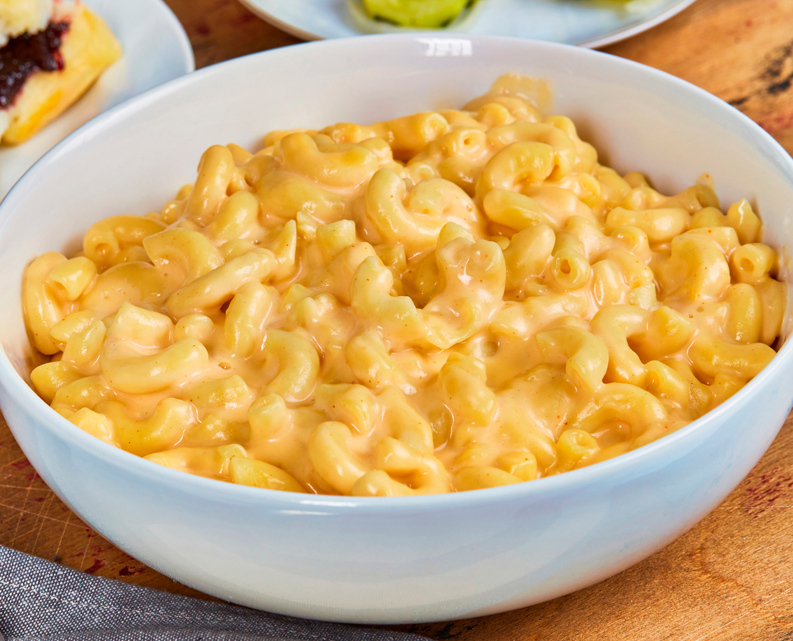

Annie's Box Mac With a Twist
There are several small ways that you can spice up your out of the box mac and cheese, this specific recipes uses Annie's Boxed Mac and Cheese

- The first step to an even more delicious experience is to salt the water before you cook the noodles
- The next step is to cook the boxed mac and cheese like normal
- The final step is to put an extra slice of sharp cheddar in the final product, and melt it on the stove!